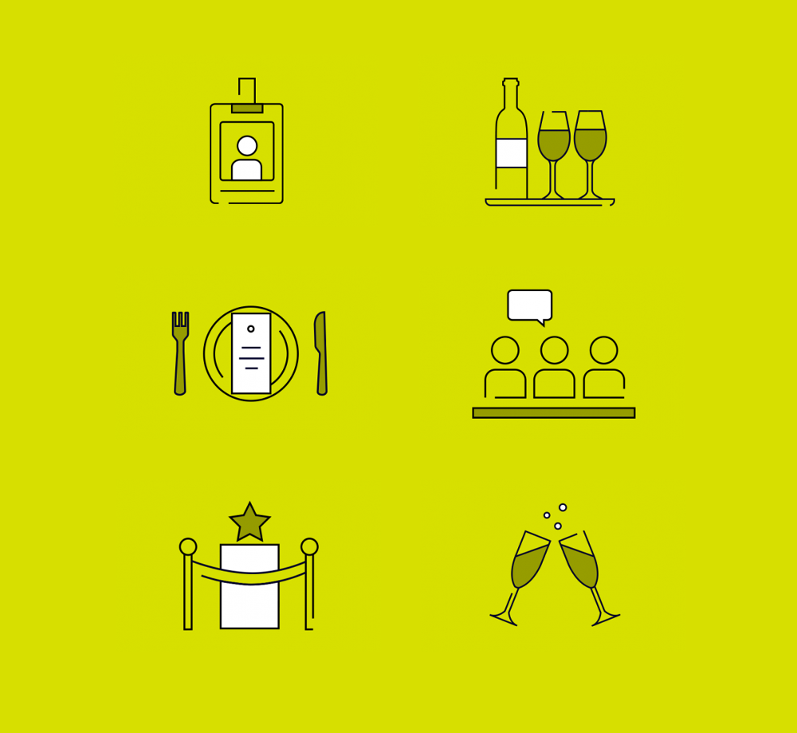
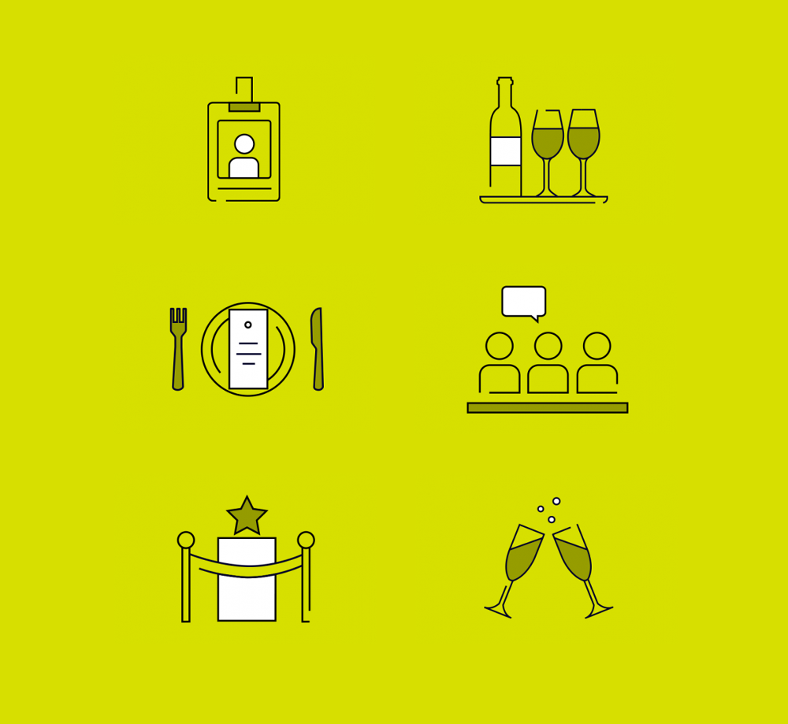

58VE
58 Victoria Embankment approached Why Studio to create, execute and develop a brand identity including a website for their new event space 58VE.
58VE is a innovative event space that caters for a range of clients, from those wishing to host a small and interment meeting to conferences and wedding receptions.
With a stunning central London location and clear panoramic views of the River Thames, this venue had to have an identity that felt equally as sophisticated and impressive.
The sites primary users were those tasks with researching and booking event spaces. Therefore we led with a stop motion animation of the River Thames to instantly communicate location as well as sell the benefits of the rooftop terrace.
To create an engaging experience, we created interactive 3D floor plans to allow users to really get a sense of the space and how their event could sit within it. Not only did this provide a great functionality to a user, it is also what sets the 58VE website apart from it's competitors.